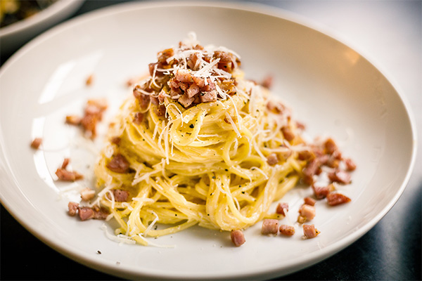

Aglio E Olio
Pasta Aglio e Olio, originating from Naples, is the epitome of Italian simplicity.
View Recipe

Carbonara
Carbonara is a classic Roman dish beloved for its simplicity and rich, comforting flavors.
View Recipe
Puttanesca
Pasta Puttanesca is a bold and flavorful dish hailing from the Campania region.
View Recipe